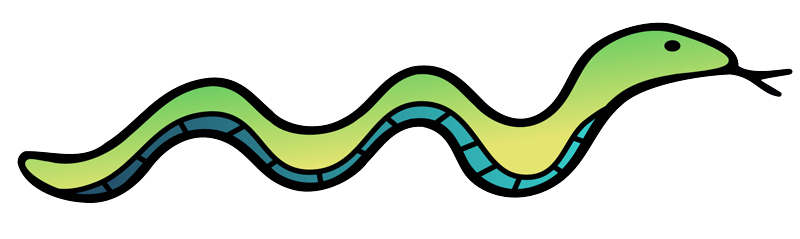

Robot Maze Coursework
Introduction
This system will allow you to test your code and submit it for marking. From any page you can use the navbar at the top to get wherever you need.The Maze Visualisation page is where you can upload your code to test and submit it for an exercise or for the final coursework.
Also at the top of the page is a link to Warwick's coursework page. From here you can download the coursework specification and view any other materials that have been provided for the coursework.
